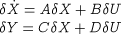

| Purpose: To carry out any Linearise task in the simulation, as detailed in the section on the Linearise elementary communication task. | |||
| Invoked: Whenever a Linearise elementary communication task is executed in a Schedule. | |||
| PROCEDURE DECLARATION | |||
SUBROUTINE gFPLINEARISE (FPID, FPHANDLE, PRNAME, SIGNAL, TIME + NU, UINDICES, UNAMES, + NY, YINDICES, YNAMES + NX, XINDICES, XNAMES, + A, B, C, D, + STATUS) CHARACTER * 256 FPID, PRNAME CHARACTER * 256 UNAMES(NU), YNAMES(NY), XNAMES(NX) INTEGER FPHANDLE, NU, NY, NX, STATUS INTEGER UINDICES(NU), YINDICES(NY), XINDICES(NX) DOUBLE PRECISION TIME DOUBLE PRECISION A(NX * NX), B(NX * NU), C(NY * NX), D(NY * NU) |
|||
| Argument | Type | On Entry | On Exit |
| FPID | C*256 | Full name of Foreign Process (terminated with a null) | Unchanged |
| FPHANDLE | I | Identifier assigned to this gPROMS Process by foreign process following call to gFPI | Unchanged |
| PRNAME | C*256 | Name of executing gPROMS process which has initiated this call | Unchanged |
| SIGNAL | C*256 | SigalName string specified for current instance of the Linearise task in the Schedule | Unchanged |
| TIME | R*8 | Current simulation time | Unchanged |
| NU | I | Number of input variables specified in the Linearise task. Any input variables that are not independent (cf. Case 6) will be removed, so in this case, this argument will give the number of independent input variables. | Unchanged |
| UINDICES | I | Indices of input variables in the global variable array. Any input variables that are not independent (cf. Case 6) will be removed, so in this case, this argument will give the indices of independent input variables. | Unchanged |
| UNAMES | C*256 | Names (tag names) of input variables. Any input variables that are not independent (cf. Case 6) will be removed, so in this case, this argument will give the names of independent input variables. | Unchanged |
| NY | I | Number of output variables specified in the Linearise task. | Unchanged |
| YINDICES | I | Indices of output variables in the global variable array. | Unchanged |
| YNAMES | C*256 | Names (tag names) of output variables. | Unchanged |
| NX | I | Number of the minimal subset of state variables. | Unchanged |
| XINDICES | I | Indices of state variables in the global variable array. | Unchanged |
| XNAMES | C*256 | Names of state variables. | Unchanged |
| A | R*8 | Matrix A in the equation  (NX * NX elements, sorted by rows). |
Unchanged |
| B | R*8 | Matrix B in the above equation (NX * NU elements, sorted by rows). | Unchanged |
| C | R*8 | Matrix C in the above equation (NY * NX elements, sorted by rows). | Unchanged |
| D | R*8 | Matrix D in the above equation (NY * NU elements, sorted by rows). | Unchanged |
| STATUS | I | Flag indicating success/failure of the Linearise task | 1: successful execution; |
| 0: non-existent Jacobian element; | |||
| -1: structurally singular DAE system; | |||
| -2: failure of linear system solver. | |||
| NOTES | |||
|
|||